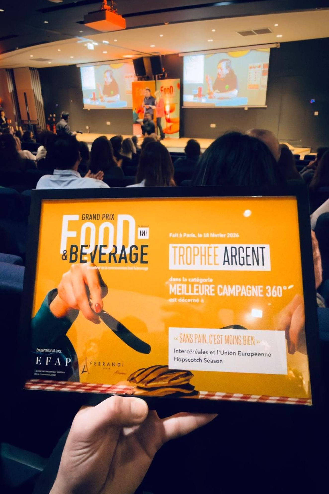
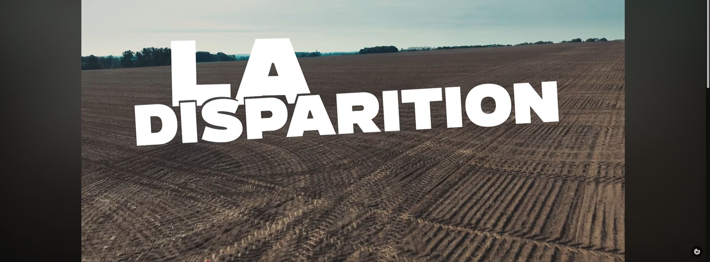
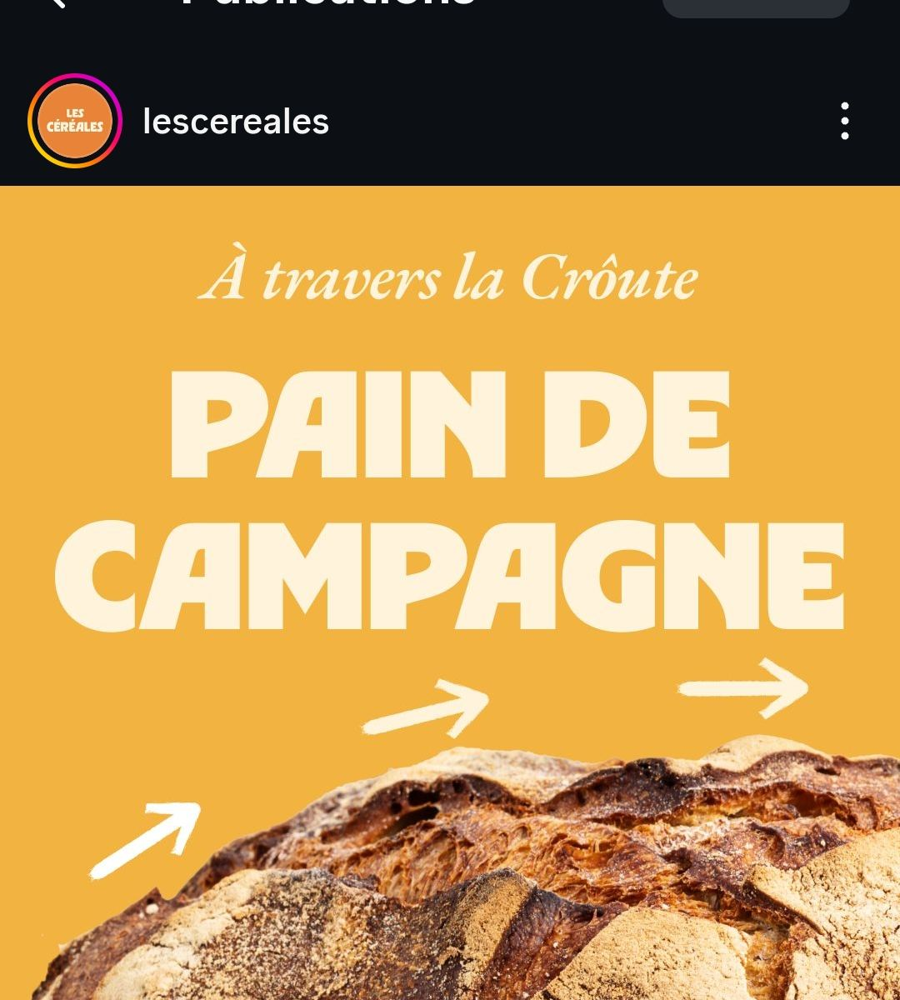

Pas parce qu'ils le rejettent — parce qu'ils n'y pensent plus.
Co-lead stratégie & création, nous concevons une campagne au principe aussi simple que son message : remettre le pain là où les jeunes regardent. « Sans pain, c'est moins bien. »
Une campagne 360° qui croise les terrains où la cible vit déjà : affichage urbain, événementiel sur les Vieilles Charrues et le Festival International des Sports Extrêmes de Montpellier, influence, live, sponsoring. Le pain réinvité dans la culture du quotidien, sans tonton, sans tradition.
La filière prend la parole avec un ton qu'on n'attendait pas d'elle — et c'est précisément ce qui la fait écouter.


